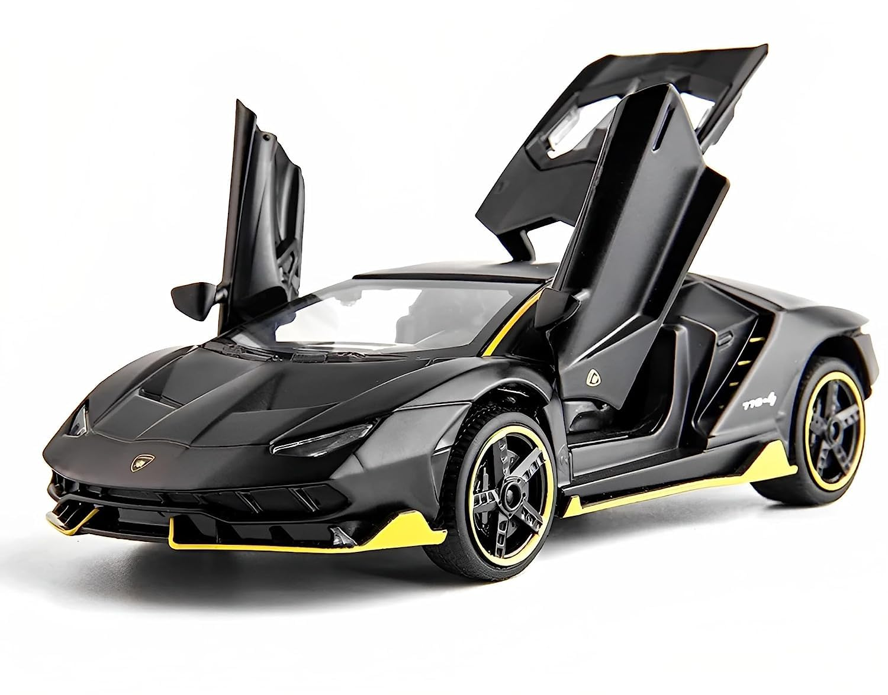

<!-- 1 -->
<!-- p - არის პარაგრაფი და თეგში იწერება ტექსტი -->
<!-- button - ღილაკი --> 
<!-- img - ამ თეგში ვწერთ ფოტოს მისამართს ან ლინკს და საიტზე გამოაქვს ფოტო -->


<!-- 2 -->
<p>Lazare Tkebuchava</p>
<p>Giorgi Nozadze</p>

<button>1</button>
<button>2</button>


